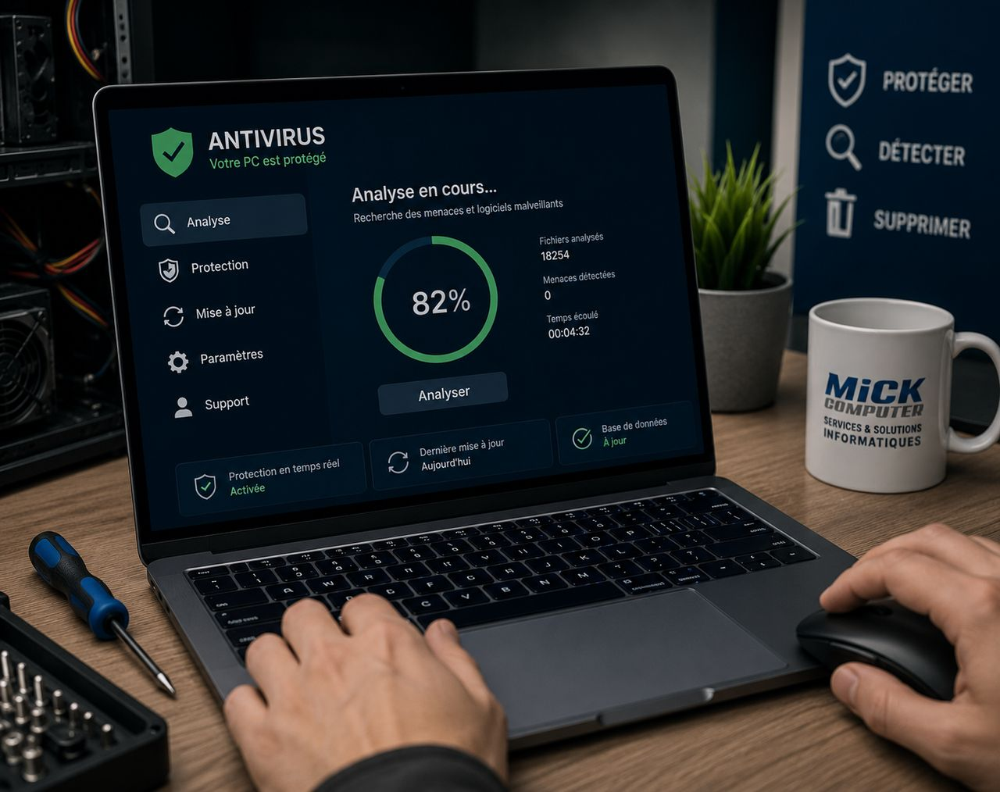

Suppression de virus et de logiciels malveillants à domicile
Des publicités qui s'ouvrent toutes seules, un ordinateur qui rame depuis quelques jours, une page qui vous réclame de l'argent. Votre PC est probablement infecté. Nous le nettoyons chez vous et nous sécurisons vos accès, sans réinstaller Windows par facilité.

Les signes qui ne trompent pas
Une infection ne se voit pas toujours. Voici les symptômes que nos clients décrivent le plus souvent :
- Des publicités et fenêtres qui s'ouvrent sans rien demander
- Une page d'accueil du navigateur qui a changé toute seule
- Un ordinateur brutalement lent depuis quelques jours
- Des barres d'outils ou des extensions que vous n'avez jamais installées
- Un antivirus désactivé ou impossible à ouvrir
- Des fichiers renommés et un message qui réclame un paiement
- Des e-mails partis de votre adresse à votre insu
Ce que nous faisons, concrètement
Nous ne nous contentons pas de lancer un scan et de partir. Nous identifions ce qui a été installé, d'où ça vient, et ce qui a pu être compromis. Puis nous nettoyons en profondeur : programmes indésirables, extensions de navigateur, tâches planifiées, éléments qui se relancent au démarrage.
Ensuite nous vérifions l'état réel du système, remettons l'antivirus en fonction et contrôlons que rien ne subsiste. Vous repartez avec une machine propre et une explication claire de ce qui s'est passé.
Rançongiciel : le cas le plus grave, et il faut être honnête
Si vos fichiers sont chiffrés et qu'une rançon est réclamée, soyons directs : la récupération n'est pas toujours possible, et personne de sérieux ne vous promettra le contraire. Nous ne recommandons jamais de payer, cela ne garantit rien et finance l'attaque suivante.
Ce que nous faisons : isoler la machine, identifier la souche, vérifier s'il existe un outil de déchiffrement connu, et sauver ce qui peut l'être. Puis nous repartons sur une base saine. C'est aussi pour cela que nous insistons tant sur les sauvegardes.
Sécuriser ce qui compte vraiment : vos accès
Un virus, ce n'est pas seulement un ordinateur lent. C'est parfois un mot de passe bancaire, une boîte mail ou un compte en ligne compromis. Après le nettoyage, nous faisons le point avec vous sur les accès à changer en priorité, et nous vous montrons comment ne pas retomber dedans.
Faut-il vraiment payer un antivirus ?
Pas toujours, et nous préférons vous le dire plutôt que de vous vendre une licence. Sur un Windows à jour, la protection intégrée fait déjà l'essentiel du travail pour un usage familial. Ce qui protège réellement, ce sont des mises à jour faites, une sauvegarde qui existe, et un peu de méfiance devant les pièces jointes et les faux boutons de téléchargement.
Intervention à domicile partout en Wallonie
Nous nous déplaçons chez vous à Charleroi, Namur, Philippeville, Dinant, Florennes, Walcourt, Couvin, Mettet et dans toute la Wallonie. Si vous soupçonnez une infection, évitez d'utiliser la machine pour vos accès bancaires en attendant notre passage.
Votre PC est infecté ?
Décrivez votre souci, on vous rappelle avec une solution claire et une estimation du temps nécessaire.